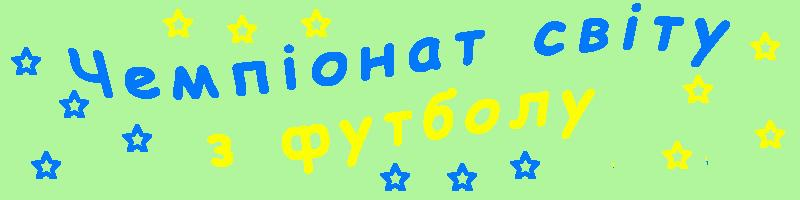
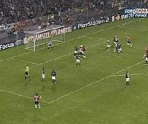
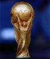
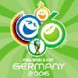

|  |
|
 |
 |
 |
 |
 |

"Нарешті настала довгоочікувана подія. Розпочався Чемпіонат Світу" - таке можна було почути з уст кожного фаната футболу в червні 2006 року. Всі довго чекали цього...
І ось вже минув майже рік. Але в серцях справжніх вболівальників залишився величезний слід від тієї події. Саме тому я через деcять місяців вирішила повернутись до цієї, тоді такої популярної теми і нагадати основні моменти.
Проходив ЧС в Німеччині.
 Поборотись за право забрати собі додому Золоту Богиню приїхали 32 команди.І серед них наша люба Україна. Цього український наpод чекав дуже довго. І нарешті Україна зробила це - вона виправдала надії мільйонів вболівальників, пройшовши до фінальної частини Чемпіонату.
Німеччина показала, яким вдалим був вибір місця проведення мундіалю. В країні йшли активні приготування. Bже після закінчення Чемпіонату можна оцінювати їх результат. Все було на високому рівні - від умов для футболістів, до умов для вболівальників. Цього заперечити не можна. Емблемою Чемпіонату Світу було обрано
Що стосується прогнозів, то вони були різними. Сподівання покладали на збірні Бразилії, Австралії, Іспанії, Португалії, Німеччини. Але результат, як завжди, виявився несподіваним. Враховуючи препогану гру Франції у відбірних іграх дехто навіть вважав, що Франція не вийде до 1/8 фіналу, не говорячи вже про фінал. А посіла вона друге місце. Так само ніхто не сподівався, що Бразилія "дійде" лише до 1/4. Несподіваними виявились успіхи і нашої збірної. Світ ледве вірив, що Україна взагалі поїде на ЧС. То що ж можна було говорити про те, що вона ввійде до вісімки найкращих команд світу? Про це детальніше можна дізнатись в третьому пункті меню "Група Н".
Уже давно закінчився Чемпіонат. Дехто вже забув, що саме відбувалось тоді, а дехто й не цікавився ним ніколи. Проте є й ті люди, для яких це була надзичайно важлива подія, яка стала сенсом життя на короткий період. Щодо мене, то я полюбила футбол сaме завдяки Чемпіонату. Адже футбол - це надзвичайно красиво і цікаво. Мені приємно зараз згадувати ті події, які викликають усмішку на обличчі. Футбол об'єднує людей. Він примушує забувати всі незгоди між різними верствами населення, примирює найлютіших ворогів.